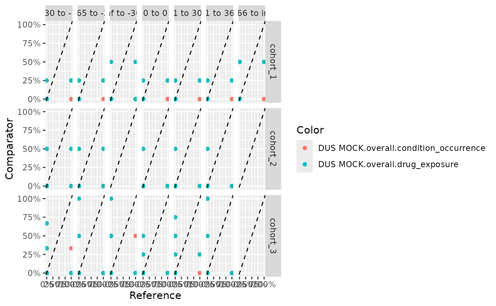

create a ggplot from the output of summariseLargeScaleCharacteristics.
Source:R/plotComparedLargeScaleCharacteristics.R
plotComparedLargeScaleCharacteristics.Rd`r lifecycle::badge("experimental")`
Usage
plotComparedLargeScaleCharacteristics(
data,
referenceGroupLevel = NULL,
referenceStrataLevel = NULL,
referenceVariableLevel = NULL,
referenceCdmName = NULL,
splitStrata = FALSE,
facet = NULL,
colorVars = NULL,
missings = 0
)Arguments
- data
output of summariseLargeScaleCharacteristics().
- referenceGroupLevel
group_level value to be used as the reference.
- referenceStrataLevel
strata_level value to be used as the reference.
- referenceVariableLevel
variable_level value to be used as the reference.
- referenceCdmName
cdm_name value to be used as the reference.
- splitStrata
boolean variable (TRUE/FALSE)
- facet
columns in data to facet. If the facet position wants to be specified, use the formula class for the input (e.g., strata + table_name ~ group_level + cdm_name). Variables before "~" will be facet by on horizontal axis, whereas those after "~" on vertical axis. Character format is also allowed (e.g., c("strata","table_name","group_level","cdm_name")). Only the following columns are allowed to be facet by: c("cdm_name", "group_level", "strata_level", "variable_level", "strata", "table_name"). If splitStrata = TRUE, strata levels are also allowed.
- colorVars
column in data to color by. Only the following columns are allowed to be used: c("cdm_name", "group_level", "strata_level", "variable_level", "strata", "table_name"). If splitStrata = TRUE, strata levels are also allowed.
- missings
value to replace the missings with.
Examples
# \donttest{
library(CohortCharacteristics)
library(DrugUtilisation)
cdm <- DrugUtilisation::mockDrugUtilisation()
lsc <- CohortCharacteristics::summariseLargeScaleCharacteristics(cdm$cohort1,
eventInWindow = "condition_occurrence", episodeInWindow = "drug_exposure",
minimumFrequency = 0.05)
#> ℹ Summarising large scale characteristics
#>
#> - getting characteristics from table condition_occurrence (1 of 2)
#> - getting characteristics from table drug_exposure (2 of 2)
#> ! The following variables: result_type, package_name, package_version; were added to `settings`
plotComparedLargeScaleCharacteristics(data = lsc,
referenceGroupLevel = "cohort_2", referenceStrataLevel = NULL,
referenceVariableLevel = '-inf to -366', referenceCdmName = NULL,
splitStrata = TRUE, facet = variable_level ~ group_level, colorVars = NULL,
missings = 0)
#> Warning: splitStrata cannot be TRUE when strata_level is unique. Changing splitStrata to FALSE.
#> Joining with `by = join_by(result_id, cdm_name, group_name, group_level,
#> strata_name, strata_level, variable_name, variable_level, estimate_name,
#> estimate_type, estimate_value, additional_name, additional_level, table_name,
#> type, analysis, result_type, package_name, package_version)`
#> Joining with `by = join_by(variable_name, cdm_name_comparator,
#> group_name_comparator, group_level_comparator, strata_name_comparator,
#> strata_level_comparator, variable_level_comparator)`
#> Scale for x is already present.
#> Adding another scale for x, which will replace the existing scale.

CDMConnector::cdmDisconnect(cdm = cdm)
# }